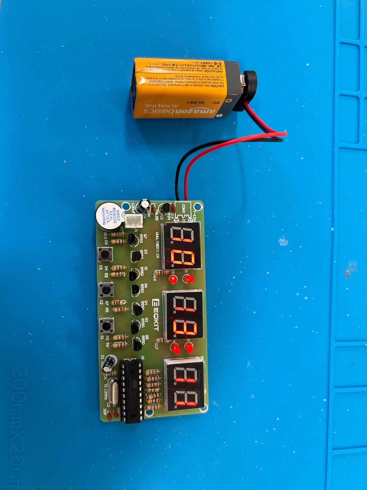

Soldering is a tedious yet effective process used to connect small pieces of metal or wires together. In this project, we built a digital alarm clock utilizing this technique.
Although I had previous soldering experience, it was still great to review some tips, tricks, and safety precautions!
Solder is made of tin and lead, but for health and filtration purposes, we used lead-free solder. Inside of the solder is flux, which promotes the melting and flow of solder while it's heated. In order to attract the solder
to a certain point, we used a soldering iron heated to 350 degrees Celsius. We accomplished through-hole soldering on a printed circuit board (PCB) in order to establish an electrical connection between the components
being threaded through the holes and the rest of the PCB.
Soldering Steps & Safety:
In the photos above, take note of the tear-drop mound throughout the row of soldered pads. This is optimal for ensuring a secure connection without risk of bridging or too little material that could cause circuitry problems.
In the middle is our in-progress alarm clock! This highlights the precarious and specific placement needed for all parts. The important parts that align with alarm clock functionality are the buzzer in the bottom left corner of the
printed circuit board and the square outlines for where the buttons should go in order to change the time and turn off the alarm when it rings. One part of the board we struggled with a lot was soldering the wires. We concluded that the less connections between the pads and wires,
meant less points of failure. We opted to directly solder our wires to the back of the board and to the pad to help prevent these connective failures. However, soldering is good for electrical connections, not mechanical. We had to repeatedly
resolder the wires to the pads, eventually gluing the wire down to ensure it wouldn't bend away from the board and severe the electrical connection. Through much trial and error, we finally had a functioning alarm clock!

This is where we got to the heart of the project: designing a functional case that allows us to hear the buzzer, see the time, and press the buttons to turn the time on and off. Based on our drawings, we thought about developing a case modeled off of a box-like, old-time television. We wanted to take the functionality of the alarm clock one step further by allowing the user to change the date accordingly using numbers with pegs on them that could be inserted into holes in the case. We would have to be careful with case modeling, essentially creating a box that would be shelled out since we needed walls to ensure the alarm clock and number board stayed in place. Because we were implementing a calendar feature to our clock case, we needed a place to store the numbers; we opted for a drawer that would be stored behind the clock and number board so all clock functionality and tool access would be compact in one space. However, before we even began printing, we noticed it would be difficult for the user to change out the alarm clock battery without having to take out the storage drawer meant for the calendar numbers. Thus, we opted for an "open book" design sitting atop a shelf.
This design would "unwrap" our closed off box design and instead have the calendar numbers displayed on one side and the functioning alarm clock on the opposite side. This design would sit on top of a 3D printed drawer by inserting the the backings and frames into carved out slots on top of the drawer. Also on the drawer top,
there would be a cutout for the battery to pass under and rest in the drawer with the other numbers or other items the user wishes to keep. The trickiest part here was estimating the 3D print tolerance to account for when creating the slots, since printed measurements are never exact, which then affects how separate pieces fit together. This
struggle was relevant throughout the entire design, especially when designing the holes for the corresponding numbers with pegs as well as the clock's outer frame. The pegs needed to have a snug fit into the hole without being too loose or too tight that could cause the peg to separate from the larger body or for the whole part to fall out
if the peg is too small for the hole. But, the only way to test our designs was by printing!
Pictured below is our box design and possible peg placements for the numbers. To rest comfortably in the slots on the drawer, we provided some rough estimations for how far apart and what angle the two halves of our case should sit. For our design in Fusion360, the calendar frame has a separated box for the numbers to fit, with corresponding holes
to match the numbers' pegs. The open rectangle was our first design for the front of the clock frame and a smooth rectangle would be on the back. We wanted the two halves of the clock case to also attach using pegs and holes, but we wanted to run these test prints first to determine best fit and how our circuit board may fit in the frame.
Once again, before printing, we had to modify the clock frame one more time. Our original design just had a lip for the printed circuit board to rest in, meaning the board would rely on gravity and the surrounding walls to stay within the casing. However, because of how the clock parts were soldered and what connections were sticking out or not flush with the backing, we had to adjust our design to take advantage of the holes in the board. By securing the board using pegs fastened to the casing, we could properly secure the clock and minimize risk of movement. One thing we quickly learned was important to print success, other than accounting for printer tolerance, was accurate and precise measurements. We had to be consistent in scale and measuring methods so we could accurately model where hole placements would go on the board. As pictured below, we had to make many defining measurements from the outer edges of any buttons, number interaces, or holes on the printed circuit board. All measurements were necessary to gain a coherent and holistic understanding of where all cutouts and additions were placed relative to one another.
The first frame iteration had all of the correct ideas, but a poor execution. The speaker and button cutouts were in the correct general area, but as shown above, a small measurement difference makes a big impact.
The rectangular cutout for the clock and light interface was also slightly too short, so we had to modify and extend the window a bit more. In addition to all of this measurement trouble, we also struggled with peg sizes and placement. Because the hole placement on the printed circuit board isn't uniform for each part, as well as not being in consistent areas of the board between the left and right sides, we had
to adjust peg placement as well. And of course, our measurements could not be exact when modeling the case due to slight printing discrepancies. In the first frame iteration, the pegs were the exact size of the holes on the printed circuit board so the fit was too tight. We made the pegs skinnier to easily slip over the clock's holes.
In spite of all these placement adjustments on the model, one interesting struggle was print quality. One of our cases had a slight curvature on a consistent portion of the frame, signaling to use that it wasn't a printing error but a slicing error. Perhaps the frame was slightly tiled in PrusaSlicer, resulting in that portion of the rectangular frame to curve upwards and give us an uneven design. Another printing problem
was the fragility of the pegs that were designed to be a part of the case. The case was built parallel to the build plate, and not perpendicular, since it was more advantageous for the overall frame structure. However, because the pegs had to be built in a tall, vertical direction with built up horizontal layers, this affected the peg's stability. Since these pegs had to reach through not only the alarm clock circuit board but also connect to the holes in
our clock backing, we opted to keep our design and were gentle when taking the clock in and out. Organic supports wouldn't have strengthened the pegs much since the horizontal layers would still grow vertically.
For the print as a whole, we kept traditional printed settings with a gyroid infill set to 15% and organic supports placed underneath the calendar frame and clock backing due to the cylindrical attachment that would connect the two halves together. We originally opted for a hinge design, but decided to take greater advantage of the cut out slits in the top of our drawer by securing the frames into those slits and sliding one of the frames over the cylinder of the other,
creating a connective clamp rather than hinged connection between the clock and calendar.
For the drawer, since we needed a slightly bigger size than what was possible on the Prusa Mini+ 3D printers, we decided to use a Raise3D printer, slicing our design in IdeaMaker. Pictured below is an overhead view of how we wanted our models to fit together and the funtionality of the drawer apparatus. As stated earlier, the top of the drawer would have inserts for the clock and calendar frames while the drawer will be used to store the battery and extra calendar numbers. On our first try, both the scaled grooves and the smooth print quality came out great. However, because we were using a different slicing software for a different 3D printer, we could only do thick raft supports rather than any other organic supports. The print quality of the drawer was great, but so was the print quality on the supports; it was definitely a struggle to chip away and unravel the folded supports. However, once we got everything cleared out, we were able to insert the battery wires through the proper hole in the top and the battery comfortably fit into the bottom drawer. Now, it was time to bring all of our pieces together.
With printed out numbers, a functioning drawer, and a loosly fitted alarm clock case, and we could finally call our design complete! Although this system does technically work, further improvements could be made to securely fasten the printed circuit board to our frame idea. Perhaps rather than relying on pegs and holes, we could have focused on more natural ways to keep the circuit board in place between two solid surfaces. We also could have adopted a pin mechanism in which we printed holes in the clock frame, and inserted sturdy pins afterwards. This way, our overall design would remain relatviely unchanged while the pegs' would have had better layer adhesion and durability when the alarm clock was placed on them. Overall, I think our idea of incorporating both a drawer and side calendar was an ambitious challenege that we pulled off well given time constraints.